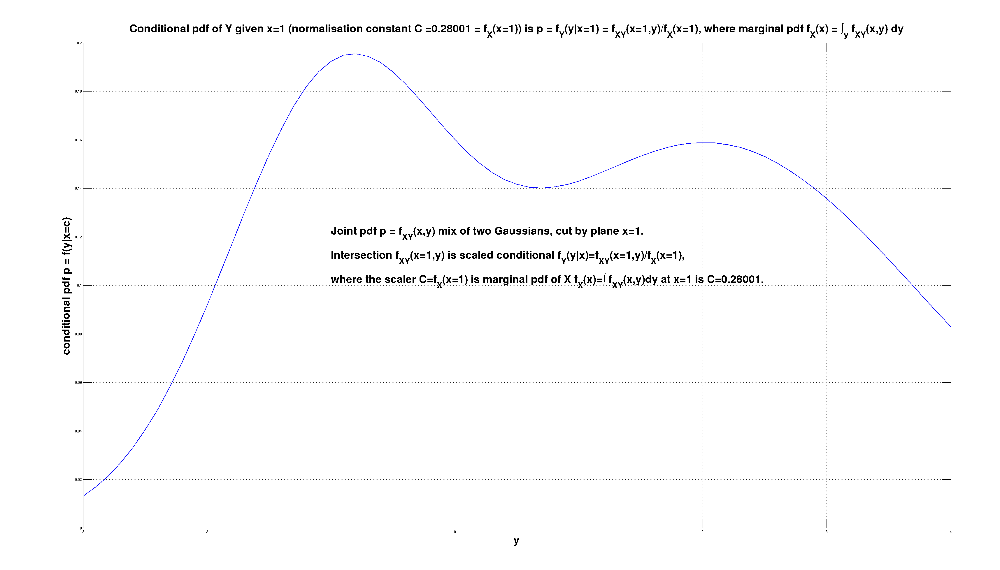

Knowing - what do I mean when I say I know something
I was told "the joint probability density function between two variables \( X \) and \( Y \) captures everything that there is ever to be known about the relation between those \( X \) and \( Y \)" 25 years ago (¡Hola! Miguel :-)), and it's been a blessing and a curse. Blessing - yeah the joint pdf \( f_{X,Y}(x,y) \) really does capture everything. Curse - often I read an article and think of the author "wish someone told you too", you poor soul.
So for me knowing something about \( X \) means knowing the distribution, the pdf \( f_X(x) \). Most of the time our knowledge is more than 1-dimensional, we have at least two qualities that we want to quantify the relationship of. So knowing something about \( (X,Y) \) jointly, for me means knowing the joint pdf \( f_{X,Y}(x,y) \).
Below I illustrate this point on the example of a joint pdf \( p = f_{X,Y}(x,y) \) that is a mix of two Gaussians in 2D space \( (x,y) \). We observe the variable \( X \), and that observations is \( x=1 \). The question is - what do we now know about the variable \( Y \), having observed the variable \( X \) (to be \( x=1 \)).
The observation \(x=1 \) is equivalent to the joint pdf being cut by the plane \( x=1 \). The intersection of the joint pdf \( f_{X,Y}(x,y) \) and the plane \( x=1 \) is \( f_{X,Y}(x=1,y) \). This curve is the best description of what we now know about the distribution of the unobserved variable \( Y \).
The starting model that was \( f_{X,Y})(x,y) \) is affected by the observation \( x=1 \). The effect is the intersection \( f_{X,Y}(x=1,y) \), and is outlined below. It is a function of \( y \), that is a scaled conditional \( f_Y(y|x=1) = \frac{f_{X,Y}(x=1,y)}{f_X(x=1)} \). The conditional pdf is \( f_Y(y|x) \).
The scaler \( f_X(x=1) \) is the marginal pdf \( f_X(x) \) of \( X \) at point \( x=1 \). The marginal pdf \( f_X(x) \) is computed from the joint pdf \( f_{X,Y}(x,y) \) by marginalization, by integrating out \( Y \) as \( f_X(x) = \int f_{X,Y}(x,y)\,dy \) and then plugging in \( x=1 \).
Joint marginal conditional pdf 1 of 3. (click to zoom)

Conditional pdf is ratio of joint (at point) and marginal 2 of 3. (click to zoom) 
Marginal pdf is derived from the joint pdf 3 of 3. (click to zoom)
Coming back to "joint pdf captures everything there is in the relationship \(X,Y\)". Putting it in a wider context.
When reading about knowledge, I have come across the following so collected here for future reference.
We can have 2 types of knowledge about the outcome of (repeated) experiment(s):
- We know what will happen and when it will happen in each experiment. This is non-probabilistic, deterministic knowledge. NB it is a special case of both (b) cases below with the pdf being a Dirac impulse function.
- We know the possible outcomes, we know how many of each will happen if we do 100 experiments, but for each 1 experiment, we can't tell the outcome.
This is probabilistic knowledge where we know the pdf (=probability density function) of the experiment outcome.
It is the aleatoric kind of uncertainty (see below) - we know the statistics, the counts, but not what one outcome is going to be in every one experiment.
Uncertainty - obverse to knowing, to knowledge, lacking (perfect, deterministic) knowledge, we can think of types:
- Aleatoric uncertainty means not being certain what the random sample drawn (from the probability distribution) will be: the p.d.f. is known, only point samples will be variable (but from that p.d.f.). We can actually reliably count the expected number of times an event will happen.
- Epistemic uncertainty is not being certain what the relevant probability distribution is: it is the p.d.f. that is unknown. We can't even reliably count the expected number of times an event will happen.
The probabilistic knowledge of type (b) above and aleatoric uncertainty of type (b) are one and the same.
The 2D \( (X,Y) \) example is also useful to illustrate a further point. Once we observe \( X \), and work out the conditional pdf \( f_Y(y|x) \), the question arises - what next? What do we do with it?
If \( Y \) is discrete, we have a problem of classification. If \( Y \) is continuous, we have a problem of regression.
We have the entire curve to work with - and that's the best. But often, we approximate the entire curve, with a representative value, and soldier on. Then the question becomes: well how do we chose one representative value from that curve?
The "\( X \) observed \( Y \) not observed" is arbitrary - it could be the other way around. We can generalize this by introducing a 2D binary mask \( M \), to indicate what parts of the vector \( (X,Y) \) are present (observed), and what parts are missing (and thus of some interest, e.g. we want to predict or forecast them).
With present data \( X \) and missing data \( Y \) in \( (X,Y) \), then missing data imputation is actually equivalent to forecasting regression or classification.
TBD When time is one of the dimensions, with Now separating the Past from the Future: there is a big difference is whether \( X \) and \( Y \) are contemporaneous, or not. Not contemporaneous, having \( X \) in the past, predicting \( Y \) in the future, makes the signal connection \( X \longrightarrow Y \) much, much weaker, by orders of magnitude, then it would be otherwise (if \( X \) and \( Y \) are not separate by time, but happen at the same time).
TBD link to entropy and average information, specific information from one symbol -
Michael R DeWeese and Markus Meister (1999), "How to measure the information gained from one symbol", Network: Computation in Neural Systems, 10:4, 325-340, DOI: 10.1088/0954-898X_10_4_303 [[excellent paper; introduces the idea that more information can make the entropy higher, thus reducing our knowledge if the knowledge measure is the spikiness of the probability density function; after we have additional observation (information), the posterior p.d.f. given the observation, maybe flatter then before => our knowledge decreased ]]
Chain of Thought (CoT), Chain of reasoning (CoR)
Extension to Type 2 intelligence: guided search through discrete space where reward is unknown in time and onnly becomes known after the last step in the sequence. Next step from Type 1 intelligence: pattern recognition single 1:1 input:output, reward known at every step.
If p.d.f. \( f_{Y|X}(y|x=a) = P(Y|X) \) is not very informative, we can undertake chain of reasoining (CoR). We can find a resoning step \( Z \), that has probability \( P(Z|X) \), such \( Z \) that the conditional \( P(Y|Z,X) \) brings us closer to our end answer that \( P(Y|X) \) can bring us.
One can undertake motivated slicing via \( Z \). For slicing by \( x=a \) the \( P(X,Y) = f_{X,Y}(x,y) \) to get \( f_{X,Y}(x=a,y) \) (and then renormalised by marginal \( P(X) = f_X(x) \) at \( x = a \) into \( f_{X,Y}(x=a,y)/f_X(x=a) = f_{Y|X}(y|x=a) \) call it conditional \( P(Y|X) \)) - we undertake that b/c we hope \( P(Y|X) \) is going to be sharper, more informative that a presumed wide un-informative \( P(Y) \). So we could be selecting such \( Z \), that \( P(Y|Z,X) \) is even sharper. And we have the \( P(Z|X) \) to judge how justified we are to undertake our motivated reasoning \( Z \) step. This is the CoR Chain or Reasoning thinking models undertake now (Jul-2025) afaik.
There are infinite numberof \( Z \)-s we can slice-condition on. The trick is chosing "the right \( Z \)-s". They can't be too divorced from \( X \), as then \( P(Z|X) \) will be very flat. The \( Z \) chosen also can't be too divorced from \( Y \) - then it will not add anything over and above \( X \), which is already too far from \( Y \) for any useful guide, \( P(Y|Z,X) \) will be as good (bad) as \( P(Y|X) \). (even if \( P(Z|X) \) may show relation to X) Looks like the size of the step when moving X->Y can be max ~20% in "interestingness", but not more, to keep it true. So the right intermediate steps \( Z \), but we don't know in advance which ones will be the "right" ones of course. We have \( P(Z|X) \) to judge their proabiblity. In the extreme, if we just summed over all possible \( Z \), weighted by their probablity, we recover our initial conditional \( P(Y|X) = SUM_{Z}P(Y|Z,X)P(Z|X) \). OF course, in real life, how is one to chose among the bazillion possible Z-s, and how to aggregate while searching, makes a world of difference.
Further. This how/what hierarchies are made/of. Already \( P(Y|X) \) is a hierarchical relationship. typically, \( X \) by sheer number/size/ordinality is much larger than \( Y \). Now conditioning on \( Z \) too \( P(Y|Z,X) \) is another brick in the wall of a hierarchical relationship. Conditioning on \( X \) takes general \( N \)-dim \( P(X,Y) \), and reduces it down to at most \( (N-1) \)-dim space of \( P(Y|X) \). Conditioning even more on \( Z \) to \( P(Y|Z,X) \) does another slicing down, to at most \( (N-2) \)-space. From widest most detailed \( N \)-dim \( P(X,Y) \), to more general less specific \( P(Y|Z,X) \) at most \( (N-2) \)-dim.
TBD Wider context to Knowing and knowledge, even ideology?
- Known Knowns. Deterministic knowledge - we know exactly which one. (deterministic knowledge above)
- Known Unknowns. We don't know which one, but we know how many of which type; i.e. the distribution. (known pdf, aleatoric uncertainty above)
- Unknown Unknowns. We don't know the p.d.f. either. (epistemic uncertainty above)
- Unknown Knowns. Ideology. Fish swimming in water never knowing anything else but water.Possibly thus being unable to perceive the water too? Not sure - that maybe a step too far. Just not knowing anything outside water, but knowing water suffices imo. (Zizek @ YT; self-reflective, I using the framework described above by the 3 cases {pdf-yes-Dirac,pdf-yes-non-Dirac,pdf-no} am like the fish, and the framework is my water, in the sense that's my entire knowledge and I know not outside of it)
TBD Time. Mechanistic pedestrian treatment of time (past/now/future) in the same framework where all is knowns is a p.d.f. So we have past and future separated by the now that marks the present for us. Say X=past, Y=future in our \( (X,Y) \) and we have the p.d.f. \( f_{X,Y}(x,y) \) .
The past has already hapenned, there is only one of it, it's certain and deterministic. Translated in p.d.f. language that means and \( f_X(x) \) or \( f_{X|Y}(x|y) \) distribution **must** be a Dirac delat impulse. The \( f_X(x) \) can not be any other functions shape than a Dirac delta.
The future has not happened yet. We know there two or more options for the future, it is never a single one. Translated in p.d.f. language that means and \( f_Y(y) \) or \( f_{Y|X}(y|x) \) distribution **can NOT** be a Dirac delta impulse. The \( f_Y(y) \) can be any other function shape than a Dirac delta. But not a Dirac delta.
Time is a moving Now barrier. Now is the point that separates the p.d.f.s of the past, and the future.
The p.d.f. of the past is **always** a Dirac impulse. The past is always certain, having already happened, the uncertainty is 0%. In fact, a definition of the past maybe "that what is known with 100% certainty."
The p.d.f. of the future is **never** a Dirac impulse. The future is always uncertain, it's never 100% certain. In fact, one definition of the future is "that what can't be known with 100% certainty."
TBD Everything is a computer now atm. (2025) Information theory is the most general theory we got.
Knowledge is a p.d.f. Learning is acquiring a p.d.f. where we previously lacked one. Acquiring p.d.f. is figuring out what-s, and how many-s of those what-s.
Computing is taking our knowledge, the learned p.d.f.s we got, then manipulating those p.d.f.s, by either marginalisation, or conditioning, to create new p.d.f.s.
These new p.d.f.s then tell us something about what what we care about but we can't observe, having observed things that are easy for us to observe, but we don't care about.
The general model of computation is one of discrete states. Every state is characterised by a different p.d.f. function. Transitions between states occure too. Those are also characterised by their own p.d.f.s. Markov assumption is that transitions depend on the current state, but don't depend on the path we took to get to the current state. So The future states are independent of the past state, only on the present state.
TBD Quantity and Quality. Dimensions \( (X,Y) \) are qualities, and we quantify them each too. When do we add new quality and obversely when do we lose a quality (dimension)?
(LJ @ HN) There is a spin on the same idea when working with data (maths/stats/comp/ML) and having to skirt around the curse of dimensionality. Suppose I have a 5-dimensional observation and I'm wondering if it's really only 4 dimensions there. One way I check is - do a PCA, then look at the size of the remaining variance along the axis that is the smallest component (the one at the tail end, when sorting the PCA components by size). If the remaining variance is 0 - that's easy, I can say: well, it was only ever a 4-dimensional observation that I had after all. However, in the real world it's never going to be exactly 0. What if it is 1e-10? 1e-2? 0.1? At what size does the variance along that smallest PCA axis count as an additional dimension in my data? The thresholds are domain dependent - I can for sure say that enough quantity in the extra dimension gives a rise to that new dimension, adds a new quality. Obversely - diminishing the (variance) quantity in the extra dimension removes that dimension eventually (and with total certainty at the limit of 0). I can extend the logic from this simplest case of linear dependency (where PCA suffices) all the way to to the most general case where I have a general program (instead of PCA) and the criterion is predicting the values in the extra dimension (with the associated error having the role of the variance in the PCA case). At some error quantity \( \gt 0 \) I have to admit I have a new dimension (quality). TBD
TBD Ndim Space. Ratio of Ncube/Nball. Does our intuition fail us about the representative values of a distribution when we go from low \( N \) \( (N = 2) \) to high(er) \( N \) \( (N \gt 10) \)? For large N, Nspace in Ndim: (a) moves into the edges (b) every observation is an outlier (in some dimension). Does that mean the space becomes discrete, it discretizes?
TBD Sparse representation, moving to symbolics and rules. Once the Ndim vector becomes sparse, we move from continuous representations to discrete symbolic rules?
--
LJ HPD Sun 20 Oct 07:31:04 BST 2024